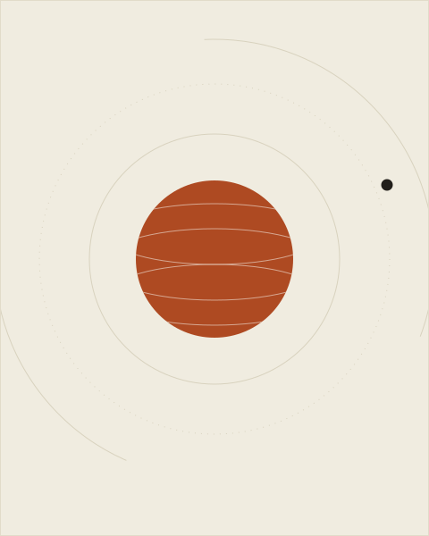

Planetary Science
Jingchun Xie
Postdoctoral Researcher
Department of Earth and Environmental Sciences · The Chinese University of Hong Kong
I study how rocky planets evolve from a geodynamic prospective.

Research
I work at the boundary of geophysics and geology, using numerical models and spacecraft data to understand how ocean worlds work — how heat and material move through their ice shells, and what their surfaces record about the oceans below. Much of my current effort goes toward the coming science return of Europa Clipper and JUICE.
-
Ice-shell dynamics
How do tidal heating and convection shape the shells of Europa and Enceladus? I build numerical models that connect interior heat flow to the tectonic features observed at the surface.
-
Geology of icy moons
I map tectonic and fluvial features on Europa and Titan in Cassini, Galileo and Voyager data, using the surface as a record of each moon’s interior and climate history.
-
Habitability of ocean worlds
From plume geochemistry at Enceladus to material exchange on Europa, I study how ice shells transport material between the ocean and space — and what that means for the search for life.
Selected Publications
-
2026
Waned mantle upwelling contributes to a heavily deformed northern smooth plains on Mercury
Nature Communications, 17, 9064 (2026) DOI
- 2023
- 2022
-
2022
Influence of megaregolith on the thermal evolution of Mercury’s silicate shell
Research in Astronomy and Astrophysics, 22 (3), 035026 DOI
Full list on Google Scholar ↗
News
-
Aug 2026
Our new paper on the evolution of Mercury has been published in Nature Communications.
-
Sep 2023
Started my postdoc at The Chinese University of Hong Kong — new group, new moons.
-
Jun 2023
Earned my Ph.D. in geophysics at Shanghai Astronomical Observatory, Chinese Academy of Sciences.
CV & Contact
Get in touch
I’m always happy to talk about icy moons — collaborations, talks, or questions from students. The fastest way to reach me is email.
jane.chen@university.edu- Office
- Room 214, Earth Science Building
University of X - Curriculum Vitae
- Download PDF ↓ (updated Sep 2026)
- Elsewhere
- Google Scholar · ORCID · GitHub